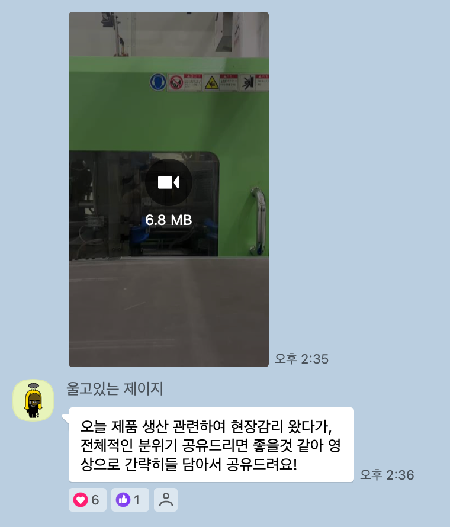
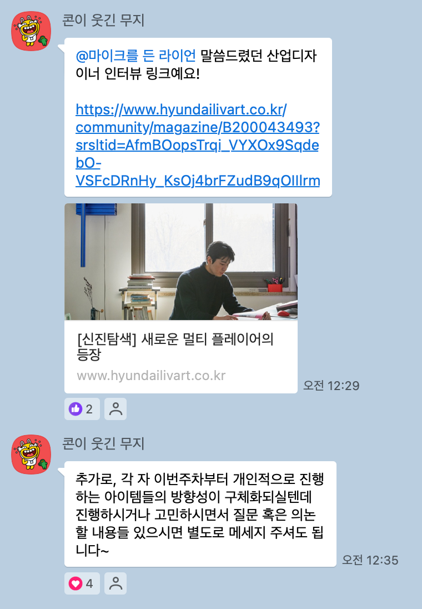
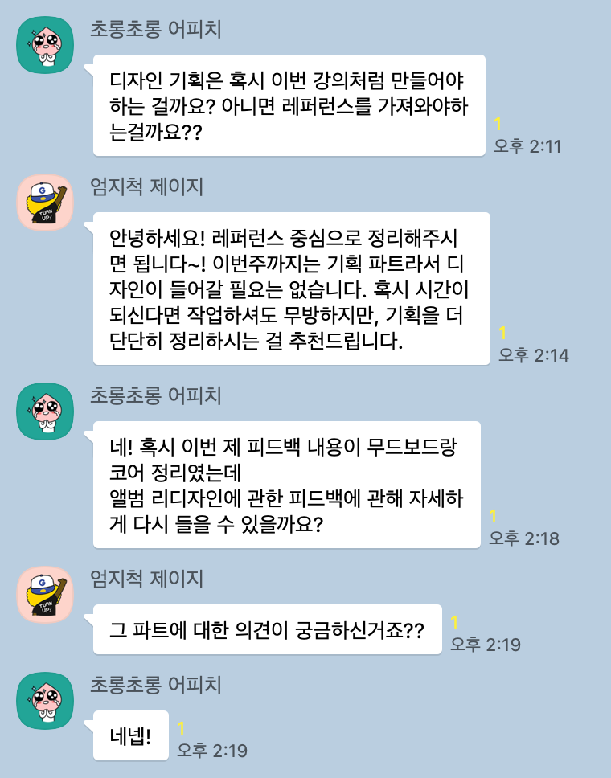
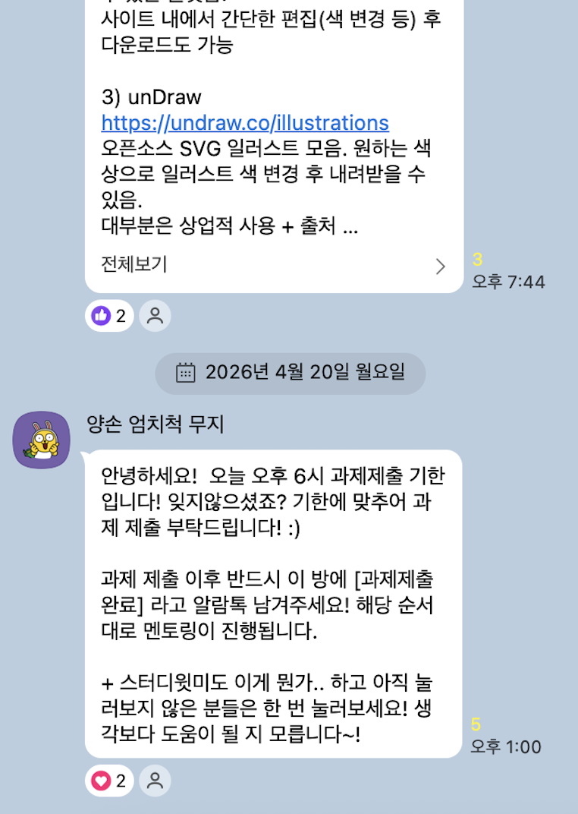

멘토링 예시 자료 공유
(디스코드 도입 이전 예시입니다. 공유를 허락해주신 멘토님들께 감사드립니다!)
🔥 웜 피드백과 쿨 피드백의 조화
매주 공유드리는 만족도조사 결과를 보면 '날카로운 피드백', '가감없는 피드백'을 원하는 경우가 많습니다. 실무자 선배님의 피드백을 받는 만큼, 잘한 부분 외에 짚고 넘어갈 부분이 확실히 있는 것이죠.
이는 'Tuning Protocol'의 두 개념과 닮아 있습니다. warm feedback은 학습 목표에 부합한 강점에 대한 평가, cool feedback은 목표와의 차이 및 개선 포인트에 대한 피드백입니다.
두 가지를 함께 전달할 때 수강생은 더 큰 동기와 성장을 경험합니다. 이 균형이 효과적이었던 실제 사례를 공유드립니다 :)
✅ 실무 경험과 연결되는 질의응답
과제 제출은 '파일 업로드'와 '사전 질문 작성'으로 나뉩니다. 사전 질문은 수업에서 답변받을 수 있도록 수강생들이 미리 정리해 두는 부분입니다.
멘토님의 현업 경험은 툴 사용, 레이아웃, 취업 고민 등 다양한 궁금증을 해결하는 가장 강력한 무기입니다. 단순해 보이는 질문이지만 실무 경험까지 이어지는 답변을 들어볼까요?
📚 노하우가 담긴 레퍼런스 공유
수업 중이나 종료 후 공유해주시는 자료는 수강생들에게 큰 힘이 됩니다. 서적이나 이미지뿐 아니라 실제 현장 분위기 등 실무와 맞닿아 있는 레퍼런스가 특히 높은 만족도로 이어집니다.
어느 수강생분이 설문에 남겨주신 것처럼 "디자이너 선배로서 조언을 많이 해주고 싶어하시는 열정"이 고스란히 전달될 수 있으면 좋겠습니다.


💪 진심이 담긴 독려와 소통
오티 때 불타오르던 수강생도 주차가 거듭될수록 의지를 잃어가곤 합니다. 지치지 않고 완주하게 하는 가장 큰 힘은 멘토님의 진심 어린 응원입니다.
24시간 열려 있는 '스터디윗미'에서 같은 반 수강생이나 멘토님과 시간을 잡고 만나면, 같이 과제를 진행하며 의지를 다시 잡을 수 있습니다. 누군가 보고 있다는 의식만으로도 효과가 생기기 마련입니다. 👀
가장 가까이서 소통하시는 만큼, 멘토님이 진심을 표현하고 이끌어 주실수록 수강생들은 더 적극적으로 질문하고 최종 수료까지 달려갈 수 있습니다.


이번 기수도 멋지게 이끌어주실 멘토님을 응원합니다. 감사합니다!
lyra@feedbluetiger.com · 010-9917-2415